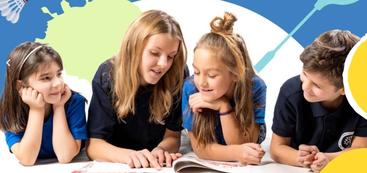
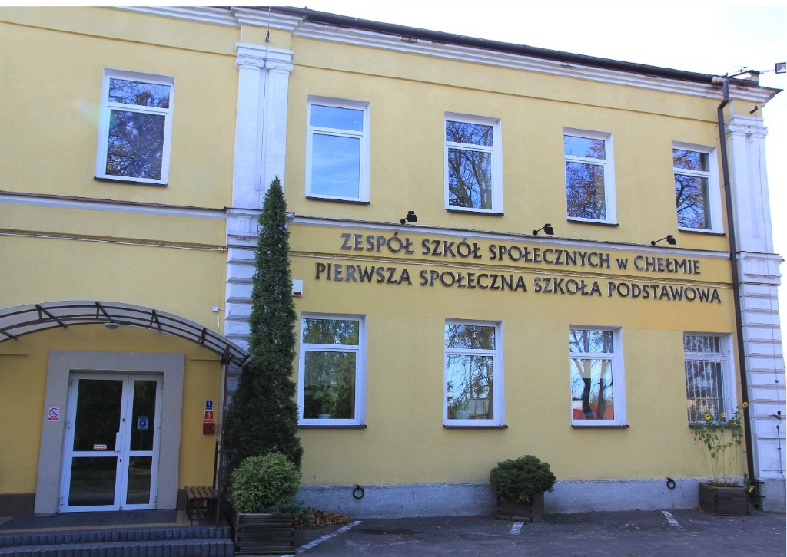
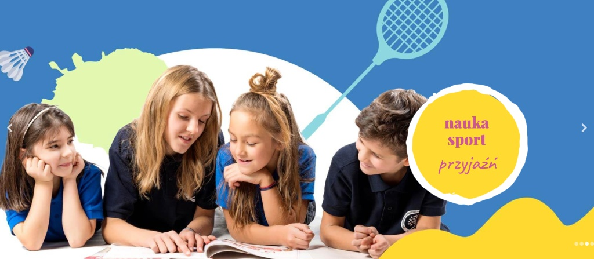

Wydarzenia 28 Października 2026
Święto Szkoły i uroczyste ślubowanie pierwszoklasistów
Nasi najmłodsi uczniowie uroczyście dołączyli do społeczności Pierwszej Społecznej Szkoły Podstawowej w Chełmie.
Czytaj więcejIndywidualne podejście, rodzinna atmosfera i pełne bezpieczeństwo każdego dziecka.
Wczesna nauka języka angielskiego, francuskiego, niemieckiego i hiszpańskiego w małych grupach lektorskich.
Żywy język angielski, autentyczny akcent i przełamywanie bariery językowej z Native Speakerem.
Ponad 30 lat doświadczenia Chełmskiego Towarzystwa Edukacyjnego i czołowe wyniki egzaminów.

Placówka rozpoczęła swoją działalność w 1992 roku jako pierwsza szkoła niepubliczna w Chełmie, założona przez Chełmskie Towarzystwo Edukacyjne – Stowarzyszenie w Chełmie. Naszym celem jest wszechstronny rozwój intelektualny, emocjonalny i społeczny uczniów.
Organ prowadzący: Chełmskie Towarzystwo Edukacyjne – Stowarzyszenie w Chełmie

WydarzeniaNasi najmłodsi uczniowie uroczyście dołączyli do społeczności Pierwszej Społecznej Szkoły Podstawowej w Chełmie.
Czytaj więcejMłodzi dziennikarze zredagowali kolejny numer z wywiadami, relacjami z wycieczek oraz twórczością literacką uczniów.
Czytaj więcej
Języki ObceUczniowie szlifowali praktyczną mowę i brytyjską wymowę podczas angażujących warsztatów językowych z Native Speakerem.
Czytaj więcej